PhotoLiker
Швидко переглядайте фотографії, зберігайте найкращі й знаходьте будь-яке фото знову.
PhotoLiker — програма для Windows. Ви відкриваєте папку з фото, гортаєте її стрілками на клавіатурі, натискаєте Пробіл, щоб вподобати фото, або літеру чи цифру, щоб розкласти фото по групах. Вподобання — це звичайні копії фото в іншій папці: нічого не ховається в базі даних, а ваші оригінали ніколи не змінюються.
Якщо папка — це диск зі старими фото, які вже не перегорнути, PhotoLiker може один раз переглянути його у фоновому режимі, а далі ви
шукаєте по ньому, як в Інтернеті: пишете birthday cake
чи children on a stage
, один раз називаєте людину — і знаходите всі
фото, де вона є. Усе працює на вашому комп’ютері, жодне фото нікуди не завантажується.
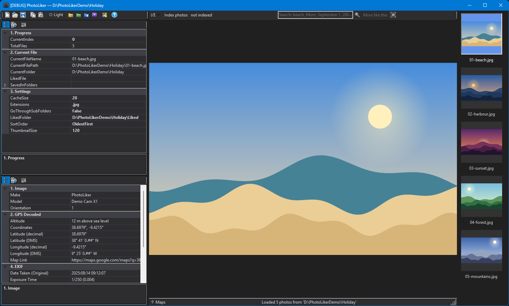
1. Встановлення
PhotoLiker потребує Windows 10 або 11 (64-бітної) і .NET 10 Desktop Runtime.
- Запустіть
PhotoLiker-Setup. Програма встановлюється лише для вас і не просить прав адміністратора. Якщо .NET Runtime немає, установник повідомить про це і може відкрити сторінку завантаження. - Запустіть Photo Liker з меню «Пуск» (установник може також додати значок на робочий стіл). Програма відкриває папку, з якою ви працювали востаннє; вперше натисніть кнопку Open на панелі інструментів і виберіть папку з фото.
- За бажанням один раз натисніть Register Context Menu на панелі інструментів. Відтепер у Провіднику Windows можна клацнути правою кнопкою на будь-якій папці й вибрати Open in Photo Liker. Та сама кнопка прибирає цей пункт.
Видалення програми прибирає її та цей пункт меню. Ваші фото, вподобання і налаштування залишаються недоторканими.
2. Перші кроки
- Відкрийте папку з фото. Показується перше фото, а праворуч — стрічка маленьких картинок (мініатюр).
- Натисніть → (стрілка вправо), щоб побачити наступне фото.
- Натисніть Пробіл, щоб вподобати фото. Його буде скопійовано в папку
Liked, а на фото з’явиться зелена позначка. Натисніть Пробіл ще раз — копію буде видалено. - Натисніть ← (стрілка вліво), щоб повернутися назад.
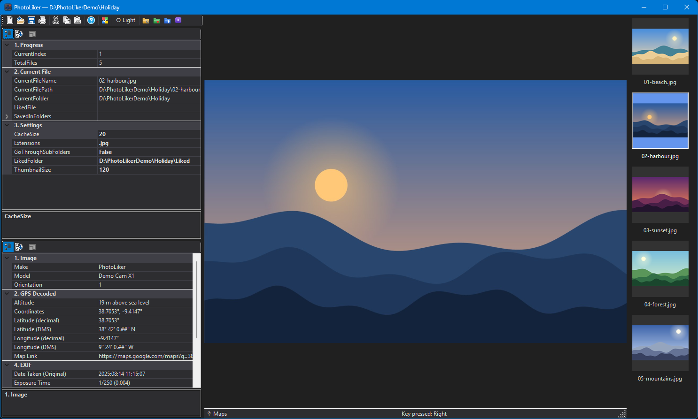
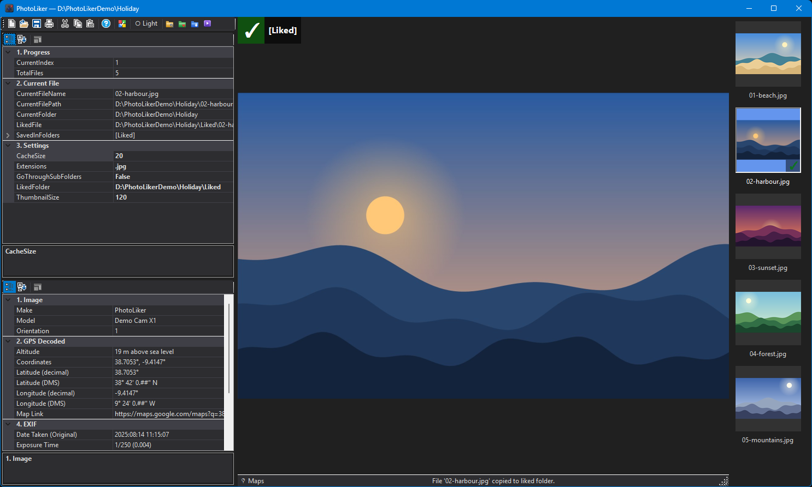
Клавіші працюють лише на фото. Коли ви вводите текст у полі (поле пошуку або значення в таблиці налаштувань), клавіші належать цьому полю. Клацніть на фото, на мініатюрі або на порожньому місці навколо фото — і клавіші знову керують фото.
3. Вікно програми
- Панель інструментів (угорі ліворуч): кнопки з розділу Панель інструментів.
- Таблиця налаштувань (ліворуч): де ви зараз (
CurrentIndex,TotalFiles), поточний файл і налаштування папки. Виберіть рядок — і в панелі під таблицею з’явиться його опис. - Дані про фото (внизу ліворуч): те, що камера записала у фото, див. EXIF і GPS.
- Смуга пошуку (над фото): індексація і пошук, див. Пошук фото.
- Фото (посередині). Зелена позначка в лівому верхньому куті означає, що фото вподобано або додано до групи; поруч із нею перелічено папки, де воно збережено. У лівому нижньому куті — перелік ваших груп.
- Мініатюри (праворуч). Клацніть на одну, щоб перейти до цього фото.
- Рядок стану (внизу): що програма щойно зробила. Праворуч у ньому є посилання Maps (якщо у фото є місце зйомки) і кнопка Rotate.
4. Клавіатура і миша
| Дія | Що відбувається |
|---|---|
| → / ← | Наступне / попереднє фото. Клацання на мініатюрі переходить до неї. |
| Home / End | Перше / останнє фото списку (або результатів пошуку, поки їх показано). |
| PageDown / PageUp | Перше фото наступного / попереднього місяця. Рядок стану називає місяць. |
| Пробіл | Вподобати фото (скопіювати в папку Liked) або знову прибрати копію. |
| Delete | Перемістити фото в папку Deleted і показати наступне (див. Видалення фото). |
| 1–9, A–Z | Зберегти фото в групі або знову прибрати з неї (див. Вподобання і групи). |
| Alt+1–9, Alt+A–Z | Поки показано результати пошуку: зберегти усі їх у групі — після того, як програма скаже, скільки це фото, і запитає підтвердження. |
| 0 | Вмістити фото у вікно перегляду (після збільшення). |
| F1 | Відкрити вікно About (див. Вікно «About» і цей посібник). |
| F2 / F3 | Відкрити цей посібник українською / англійською. |
| F5 | Скласти список папки заново (див. Великі папки). |
| Ctrl+C | Скопіювати фото в буфер обміну як файл і як картинку: вставте його в Провідник або месенджер. |
| Ctrl+колесо миші | Над фото: збільшення, далі перетягуйте картинку. Над мініатюрами: зміна їхнього розміру. |
| Esc | Закрити результати пошуку. |
| Enter у полі пошуку | Шукати. |
| Shift+перетягування над фото | Позначити обличчя, яке програма пропустила (коли ввімкнено значок облич). |
Такий самий перелік є у вікні About (кнопка Help).
5. Панель інструментів
- Open: вибрати папку з фото.
- Copy: скопіювати показане фото в буфер обміну (те саме, що Ctrl+C).
- Dark / Light: перемкнути тему, див. Темна і світла тема.
- Open Source Folder і Open Liked Folder: показати в Провіднику папку з фото або папку Liked.
- Load Liked Folder: відкрити папку Liked як окрему папку з фото, щоб подивитися на вибране.
- Generate Video: створити відео з фото, див. Створення відео.
- Align dates, Remove empty folders, Find duplicates: див. Наведення ладу.
- Register Context Menu / Unregister Context Menu: додати або прибрати пункт Open in Photo Liker у контекстному меню папок.
- Help (знак питання): вікно About з клавішами і цим посібником.
6. Вподобання і групи
Окрім вподобання, фото можна розкладати по групах: родина, подорожі, фото для друку — як вам зручно. Натисніть клавішу
1–9 або A–Z (без Ctrl, Alt і Shift) — і копію фото буде збережено в папці
A - Group, 3 - Group тощо всередині папки Liked. Папка створюється, коли вона вперше потрібна. Натисніть ту саму клавішу ще раз — і копію буде прибрано.
Вподобання пробілом окреме: фото може бути вподобаним і водночас у скількох завгодно групах.
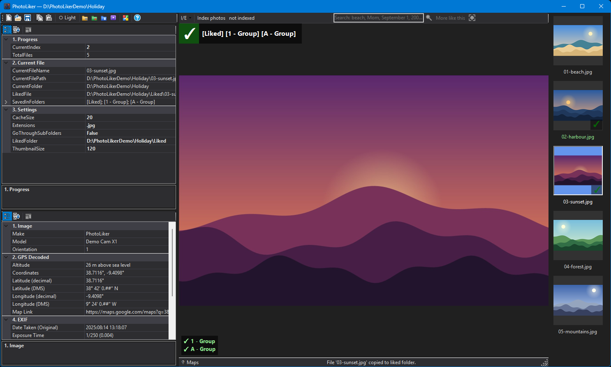
1 та A. Папки перелічено поруч із зеленою позначкою, а легенда в лівому нижньому куті
показує, яка клавіша куди зберігає.- Назвіть свої групи. Перейменуйте папку групи в Провіднику, якщо нова назва й далі починається з тієї самої клавіші та
- Group:A - Group Familyвідтоді використовується для A. Легенда показує ці назви. - Де збережено це фото? Рядок
SavedInFoldersтаблиці налаштувань перелічує всі папки, де є копія показаного фото. - Усі результати пошуку одразу. Поки показано результати, Alt+A (або будь-яка клавіша групи) зберігає кожне з них у групі.
Нічого не копіюється, доки ви не погодитеся: вікно повідомляє, скільки це фото і скільки МБ. Копіювання показує смуга прогресу, а Cancel його зупиняє.
Якщо в групи ще немає папки, її буде названо за пошуком, наприклад
A - Group children on a stage. Так лише додаються копії, жодну не видаляють. - Назви копій. У назві копії є короткий код,
IMG_0001 [3f9a1c2e].jpg, щоб фото з різних папок, які мають однакові імена файлів (кожна камера має власнийIMG_0001.jpg), ніколи не перезаписували копії одне одного. - 0 — не група: ця клавіша вміщує фото у вікно перегляду.
7. Видалення фото
Delete переміщує показане фото в папку Deleted всередині папки з фото і показує наступне.
Нічого не стирається. Фото зберігає своє місце всередині папки (314CANON\IMG_0001.jpg потрапляє в
Deleted\314CANON\IMG_0001.jpg). Щоб повернути фото, перемістіть його з Deleted у Провіднику; наступного разу, коли папку буде переглянуто,
воно знову буде в списку. Щоб побачити, що там лежить, відкрийте папку Deleted кнопкою відкриття папки.
Папку Deleted пропускають під час складання списку фото, а індекс пошуку її не переглядає. Копії фото в папках Liked і груп залишаються на місці.
8. Поворот фото
Кнопка Rotate у правому куті рядка стану повертає показане фото на чверть оберту за годинниковою стрілкою і зберігає це у файлі.
Натисніть її знову — і буде ще чверть. Вона працює з файлами JPEG (.jpg, .jpeg); для файлів іншого типу рядок стану повідомить про це,
і нічого не буде записано.
- Нічого не втрачається. Картинка не декодується і не записується заново; змінюється лише примітка у файлі, яка підказує кожній програмі перегляду (цій програмі, Windows, телефонам, браузерам), як повернути картинку. Повертати можна скільки завгодно разів.
- Дати файлу залишаються такими, як були.
- Копії фото в папках Liked і груп не повертаються: це фото у тому вигляді, в якому воно було, коли ви його вподобали.
9. Налаштування
Таблиця налаштувань угорі ліворуч показує прогрес, поточний файл і налаштування папки. Кожен рядок має опис: виберіть його — і панель під таблицею пояснить, для чого він.
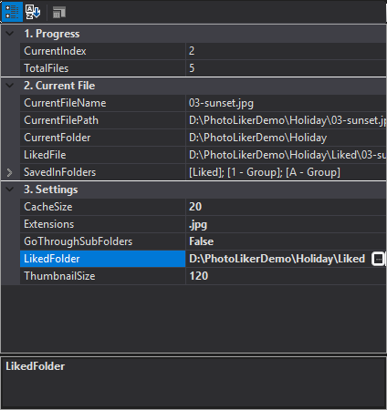
| Налаштування | Значення |
|---|---|
| LikedFolder | Куди копіюються вподобані фото. За замовчуванням — папка Liked всередині папки з фото. Кнопка … відкриває вибір папки. |
| GoThroughSubFolders | Показувати також фото з підпапок. Сама папка Liked пропускається. |
| Extensions | Типи файлів, які вважаються фото, через ; або ,, кожен із крапкою: .jpg; .png. |
| SortOrder | Порядок фото, див. Порядок фото. |
| CacheSize | Скільки фото з кожного боку від показаного тримається готовими в пам’яті, щоб стрілки спрацьовували миттєво. |
| ThumbnailSize | Розмір мініатюр у пікселях. Його змінює Ctrl+колесо миші над мініатюрами. |
CurrentIndex — номер показаного фото, починаючи з 0: впишіть інше число, щоб перейти до того фото (число поза списком веде до найближчого краю). CurrentFile, TotalFiles та інші рядки з відомостями змінити не можна.
Вибір папки
Кнопка … в рядку LikedFolder відкриває стандартне вікно вибору папки Windows. Якщо натиснути «Скасувати», старе значення лишається.
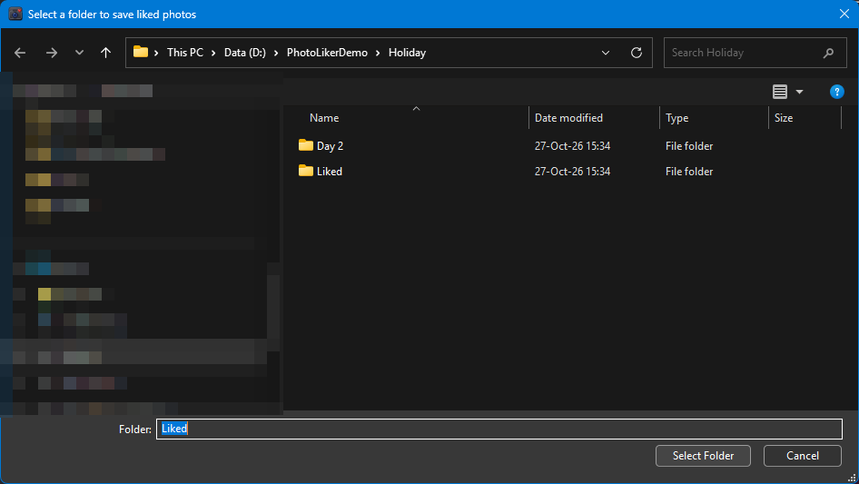
Зміни, після яких папку переглядають заново
Зміна GoThroughSubFolders, Extensions або SortOrder одразу складає список папки наново, і фото, яке ви дивитеся, залишається вибраним, якщо воно ще є в списку. Інші налаштування цього не потребують: нова LikedFolder використовується з наступного вподобання.
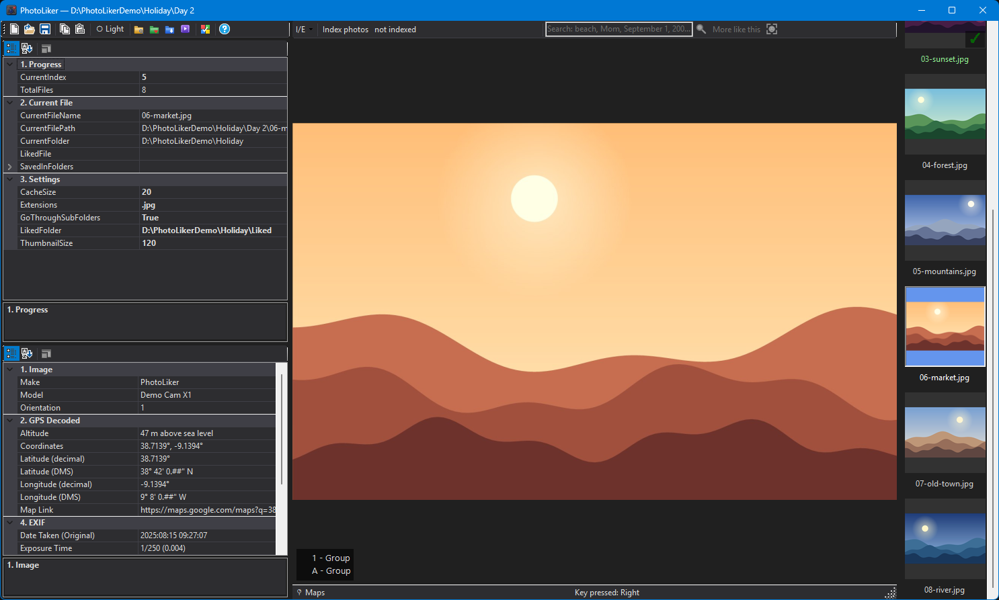
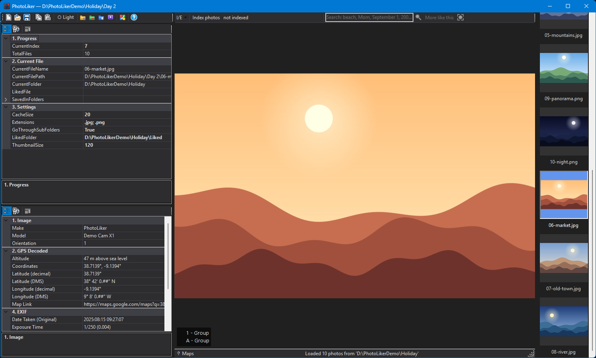
.png до Extensions, з’являються файли PNG.10. Порядок фото
SortOrder визначає порядок списку, а отже, куди ведуть стрілки, Home, End і PageDown / PageUp:
- OldestFirst (за замовчуванням) і NewestFirst йдуть за датою створення кожного файлу. Ця дата надходить разом зі списком папки, тому сортування нічого не коштує, навіть на мережевому диску.
- ByName йде за назвою файлу, так, як це робить Провідник: регістр не має значення, а числа сприймаються як числа,
тому
IMG_2стоїть передIMG_10. - Random перемішує фото. Щоразу, коли фото перелічують заново (відкриття папки ще раз, F5, пошук, створення відео), порядок новий.
- None не сортує: фото йдуть у тому порядку, в якому їх віддає диск. Це найшвидше для папки з дуже великою кількістю фото.
Дата створення — це момент, коли файл з’явився на цьому диску. Фото, скопійоване з картки чи іншого диска, зазвичай має дату копіювання, а не зйомки, тому папка, скопійована за один раз, іде в порядку копіювання. Align dates встановлює датою файлів дату зйомки фото.
Результати пошуку підпорядковуються тому самому налаштуванню, але йдуть за датою зйомки фото, яку індекс знає для кожного фото.
11. Великі папки
Скласти список папки на мережевому диску довго: що більше підпапок, то довше (6,6 секунди для 16 000 фото в 985 папках на домашньому роутері; хвилини для великого архіву). Тому PhotoLiker зберігає список.
- Вперше папку переглядають повністю, і список зберігається на цьому комп’ютері.
- Далі папка відкривається одразу із збереженого списку, а поки ви вже дивитеся фото, програма у фоновому режимі перевіряє, що змінилося. Коли перевірку закінчено, нові фото з’являються в списку, фото, яких більше немає, зникають, фото, яке ви дивитеся, залишається на місці, а рядок стану повідомляє, що знайдено.
- Фото, яке інша програма змінила на місці, ця перевірка не помічає. F5 складає список папки заново.
- Збережені списки — лише зручність. Їх можна видалити будь-коли; тоді папки переглядають заново.
12. EXIF і GPS
Таблиця під налаштуваннями показує те, що камера записала в показане фото (EXIF): виробника і модель, витримку, спалах, дату зйомки та інше — по групах. Виберіть рядок — і панель під таблицею простими словами пояснить його. Рядок All Metadata у розділі Debug містить усе у вигляді тексту.
Якщо у фото є місце зйомки, воно показується координатами, висотою тощо, а рядок Map Link і посилання Maps праворуч у рядку стану відкривають це місце в Google Maps.
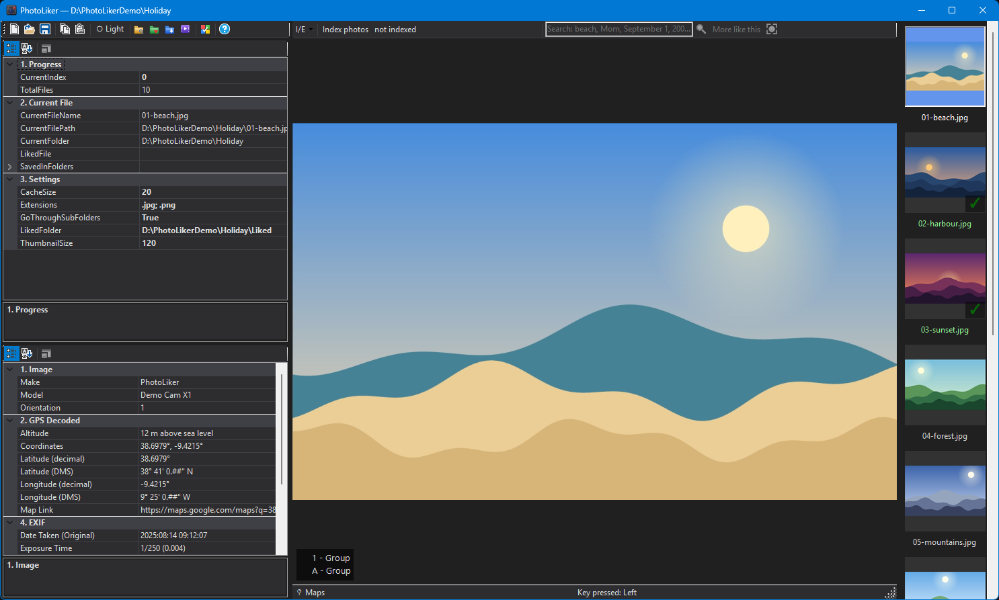
- Дати показано з місяцем словом:
14 Aug 2025 09:12:07. - Date Taken (Original) — коли знімок зроблено. Date Last Saved — коли програма востаннє зберегла фото; фото, яке пізніше повертали чи редагували, покаже тут той день. PhotoLiker (пошук за датою, порядок списку, Align dates) керується першою.
- Рядок File Date — не EXIF: це дата файлу на диску. Він закінчується на
(= Date Taken (Original)), якщо файл має дату зйомки, і на(≠ Date Taken (Original)), якщо ні (скопійований файл отримує день копіювання).
13. Наведення ладу: дати, порожні папки, дублікати
Три кнопки панелі інструментів наводять лад у папці з фото. Усі вони працюють однаково: спершу дивляться і показують, що зробили б, нічого не змінюється, доки ви не натиснете кнопку, яка це виконує, а те, що вони переміщують, переміщується, а не стирається.
Align dates
Фото, скопійоване з картки, телефона чи старого диска, має датою файлу день копіювання, а справжня дата лише всередині нього (EXIF). Align dates встановлює датами файлів дату зйомки, щоб Провідник, інші програми й порядок списку (SortOrder іде за датою створення) збігалися з камерою.
- Вікно читає початок кожного файлу і показує Will change (з датою зйомки та теперішніми датами), а також списки фото, які Already match, мають No usable EXIF date або Unreadable. Для десятків тисяч фото це триває хвилини, і це можна зупинити.
- Прапорці вибирають, що встановлювати: дату створення і дату зміни файлу (увімкнено) і, за бажанням, інші дати всередині фото (вимкнено).
- Виберіть фото й натисніть Пробіл, щоб не брати його до цього запуску. Подвійне клацання на рядку відкриває фото.
- Фото без придатної дати. Камера, що втратила годинник, записує
2001-01-01; таким датам не вірять. Виберіть такі фото й натисніть Use a date…, щоб дати їм дату: ту, що вже є у фото, дату з назви його папки (2015-05-01,01.05.2015 Anna), дату файлу або ту, яку ви впишете. - Change N photos виконує зміну, а копії в папках Liked і груп отримують ті самі дати. Кожен запуск записує журнал у папці з фото, а Undo last run… повертає дати назад.
Remove empty folders
Після переміщення і видалення фото лишаються порожні папки, а Windows залишає кеші мініатюр (Thumbs.db) у тих, які показувала.
Кнопка перелічує папки, де немає нічого корисного: зовсім нічого, лише файли мініатюр, або лише інші такі самі папки. Усе вже позначено; натисніть Remove N folders, щоб їх видалити.
- Правило суворе: будь-який інший файл зберігає свою папку і всі папки над нею. Папка
Deleted, папка Liked з групами та системні й NAS-папки не чіпаються. Саму папку з фото ніколи не видаляють. - Зняття позначки з папки знімає позначки з папок над нею; позначення папки позначає ті, що всередині. Подвійне клацання на рядку відкриває папку в Провіднику.
- Фото, які неможливо прочитати. Другий список містить пошкоджені фото й порожні (0 байтів) файли фото, знайдені під час перегляду папок. Спершу в ньому нічого не позначено. Позначте ті, що мають піти, і натисніть Move N to Deleted\Unreadable: їх буде переміщено, а не стерто.
Find duplicates
Фото копіюються: картка в папку з назвою дня, та сама картка вдруге, папка з відбракованим. Find duplicates знаходить фото, які показують точнісінько ту саму картинку в різних папках,
залишає по одному, а решту копій переміщує в Deleted\Duplicated усередині папки з фото, зберігаючи шлях, яким вони були.
- Назва файлу не має значення, так само як і оцінка чи ключове слово, додані до фото пізніше: вирішує картинка. Compare all of the picture працює повільніше й не залишає сумнівів.
- Яка копія залишається, вирішує папка — так, як зробили б ви самі: папка з датою в назві (
2014-11-23) або з власною назвою (Crete trip) перемагає папку камери (100NIKON,314CANON); усе всерединіDeletedчиTrashпрограє; файл, назва якого каже, що це копія (IMG_5407 - Copy.JPG,IMG_5407 (2).JPG), програє. Копії, які й далі рівні, лишаються на ваш вибір і не переміщуються, доки ви не вирішите. - Кожен рядок пояснює чому. Виберіть фото й натисніть Keep this one, щоб воно залишилося, або Leave group alone. Хоча б одна копія кожної групи завжди залишається. Подвійне клацання на рядку показує картинку.
- Move N photos виконує переміщення; запуск записується в журнал, а Undo last run… повертає копії. Фото в папках Liked і груп ніколи не розглядаються: це навмисні копії.
Не наводьте лад у папці, поки її індексують для пошуку: спершу зупиніть індексацію.
14. Створення відео
Кнопка Generate Video перетворює фото на відео: кожне фото показується на мить, одне за одним, за бажанням — після титульної картинки і з піснею під ними. Нічого додатково встановлювати не треба.
- Виберіть фото. Відео створюється з фото однієї папки. Найпростіше вподобати потрібні фото Пробілом (або розкласти їх по групах і робити одне відео на групу), а потім відкрити вікно.
-
Натисніть Generate Video — кнопку із зображенням кіноплівки на панелі інструментів. Вікно відкривається одразу.
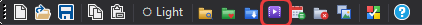
-
Виберіть фото і порядок. Photos from містить Current (те, що зараз показує вікно: папку або результати пошуку), Liked і кожну папку групи,
кожну з кількістю фото. Sort order задає порядок у відео: від найстаріших, від найновіших, за назвою, випадково або як у списку. Output folder змінюється разом з вибором,
тож відео опиняється поруч із фото, з яких його зроблено; Output file name — його назва.
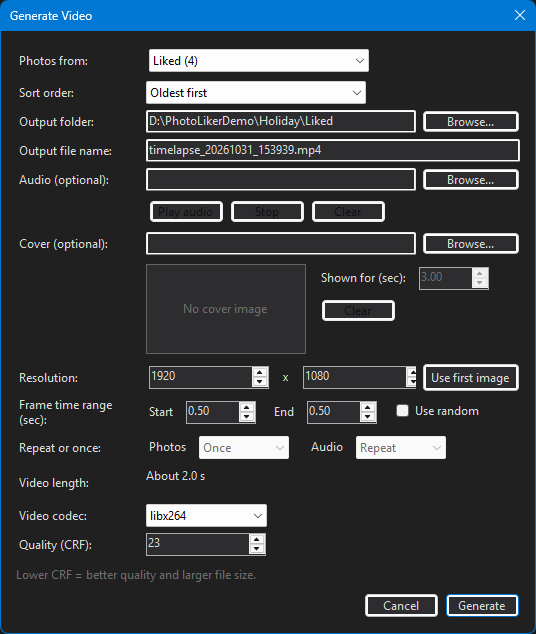
- Титульна картинка (необов’язково). Cover: натисніть Browse…, виберіть картинку — і мініатюра покаже її. Обкладинка — перша картинка відео незалежно від порядку; Shown for (sec) — скільки вона лишається на екрані (спершу 3 секунди). Clear прибирає її.
-
Пісня (необов’язково). Audio: натисніть Browse… і виберіть файл mp3, m4a, wav, flac, ogg чи будь-який інший звуковий файл.
Play audio і Stop дають змогу послухати його заздалегідь, а його тривалість показано (
Length: 3:25). Пісня, довша за відео, обривається там, де закінчується відео; коротша повторюється знову й знову. -
Скільки показується кожне фото. Frame time range (sec): Start — час першого фото, End — час останнього, а фото між ними йдуть рівними кроками.
Use random дає кожному фото власний час між цими двома. Video length показує, скільки триватиме відео і що станеться з піснею, і змінюється разом з кожною вашою зміною.
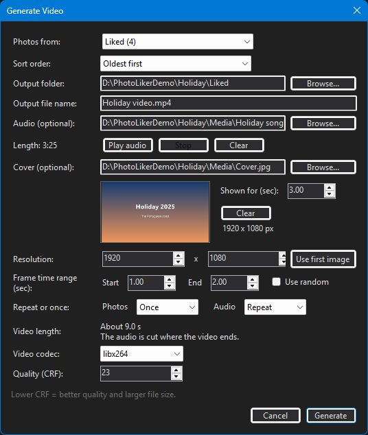
- Repeat or once (потрібна пісня). Photos: Repeat показує фото знову й знову, поки не закінчиться довга пісня, замість того щоб її обривати. Audio: Once програє коротку пісню один раз, а решта відео лишається без звуку.
-
Розмір і якість. Resolution — розмір відео (1920 × 1080 — це Full HD; Use first image бере розмір першого фото).
Video codec:
libx264грає всюди,libx265дає менші файли, які читає не кожен програвач. Quality (CRF): що менше число, то краща якість і більший файл; 23 — добрий початок. -
Натисніть Generate. Вікно збільшується, щоб показати смугу прогресу й журнал. Фото, яких уже немає на диску з часу складання списку, пропускаються,
а фото, зняті телефоном у вертикальному положенні, повертаються правильно. Коли журнал напише Video generation completed, відео вже в папці призначення, а кнопка Play його відкриє.
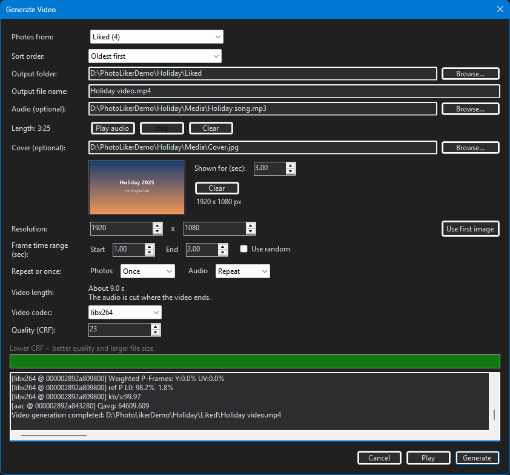
Тривалість відео показано до початку, тож можна спершу спробувати часи й порядок фото та натиснути Generate, лише коли все влаштовує.
Якщо щось не так. «No photos in this folder»: спершу вподобайте кілька фото або виберіть Current. Повідомлення, що ffmpeg не знайдено: перевстановіть
PhotoLiker (немає його папки ffmpeg) або додайте ffmpeg.exe у PATH.
15. Пошук фото
Для бібліотеки з тисяч старих фото на диску чи NAS PhotoLiker може один раз переглянути кожне фото, а потім відповідати на запитання про них. Нічого не завантажується в Інтернет: аналіз іде на цьому комп’ютері, а ваші фото лише читаються й ніколи не змінюються.
- Index photos (у смузі над фото) аналізує папку та її підпапки у фоновому режимі, показує смугу прогресу й оцінку часу, що лишився. Можна далі переглядати фото, зупинити (кнопка стане Stop indexing) і продовжити пізніше: повторно обробляються лише нові чи змінені фото. Пошук працює, щойно в індекс потрапили перші фото. Вперше програма запитає дозволу, перш ніж завантажувати моделі ШІ (близько 650 МБ).
- Шукайте, описуючи те, що потрібно:
children on a stage,snow,a dog,autumn leaves. Впишіть це в поле пошуку і натисніть Enter або клацніть на лупі. Результати замінюють папку у вікні перегляду: переглядайте, вподобайте і розкладайте їх по групах, як будь-які фото. Esc або Close results повертає назад. More like this знаходить фото, схожі на показане. Описи пишіть англійською. Фото, яке є в бібліотеці кілька разів, показується один раз. - Дати. Впишіть дату в поле пошуку, окремо або разом з іншими словами:
September 1(цей день у кожному році),September 2009,2009-09-01,2009,2009-2011,beach September 2009,Mom 2005. Назви місяців — англійською. Заголовок вікна каже, як дату було розпізнано. - Обличчя. Ввімкніть значок облич (остання кнопка смуги), щоб побачити обличчя, знайдені на показаному фото. Клацніть на обличчі, щоб сказати, хто це (New person… або вже названа людина),
щоб знайти всі фото цієї людини або видалити хибне обличчя (лялька, плакат). Якщо вписати ім’я людини в поле пошуку, знайдуться її фото. Жовта пунктирна рамка з іменем і знаком питання — припущення
(
looks like Mom
): клацніть на ній, щоб підтвердити. Щоб позначити обличчя, яке програма пропустила, утримуйте Shift і обведіть його рамкою. Імена, які ви даєте в одній папці, відомі й в інших.
Корисно знати
- Швидкість. На 6-ядерному настільному процесорі індексація обробляє приблизно три фото за секунду (20 000 фото — приблизно дві години). Мережевий диск може бути повільнішим. Відеокарта не потрібна.
- Дати фото. Дата береться з камери (EXIF). Якщо її немає або їй не можна вірити (раніше 1995 року, у майбутньому, або камера втратила годинник), використовується дата створення файлу, а рядок стану повідомляє, скільки результатів датовано так.
- Інший комп’ютер. Скористайтеся I/E > Export index… (перша кнопка смуги), щоб зберегти індекс у файл, і I/E > Import index… на іншому комп’ютері.
- Visual C++ runtime. Моделям ШІ потрібен актуальний Microsoft Visual C++ runtime. Він надходить з оновленнями Windows; якщо завантаження моделей зупиняється з повідомленням про це, встановіть Visual C++ Redistributable (x64).
16. Темна і світла тема
Кнопка теми на панелі інструментів перемикає між двома темами. Вибір запам’ятовується для кожної папки.
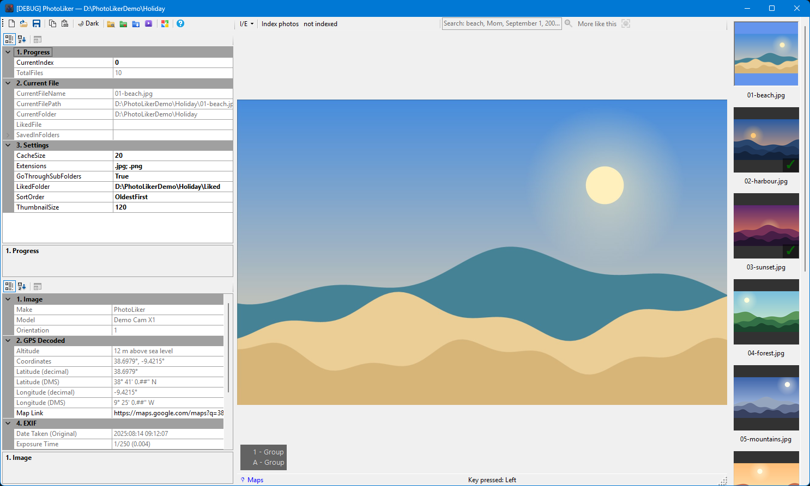
17. Що зберігає PhotoLiker і де
- У кожній папці з фото:
photo-liker-config.json— налаштування цієї папки (тема, положення вікна, типи файлів, фото, на якому ви зупинилися), тож кожна папка відкривається так, як ви її залишили, на будь-якому комп’ютері. Шляхи в ньому відносні, тому папку можна перенести чи передати.photo-liker-people.jsonмістить імена, які ви дали обличчям. Це єдині файли, які PhotoLiker додає до вашої папки, окрім журналів Align dates і Find duplicates. - Папка Liked (за замовчуванням усередині папки з фото) і її папки груп: ваші копії.
- Папка
Deletedусередині папки з фото: фото, які ви прибрали, а також переміщені дублікати й фото, які не читаються. - На цьому комп’ютері, у
%LocalAppData%\PhotoLiker: збережені списки папок, індекс пошуку, моделі ШІ, люди з усіх ваших папок і остання відкрита папка. Усе, окрім моделей, можна створити знову, тож видалення коштує лише часу на повторне створення.
18. Вікно «About» і цей посібник
Кнопка Help (знак питання) в кінці панелі інструментів або клавіша F1 відкриває вікно About: версія й дата збірки програми, клавіші та рухи миші (список із розділу Клавіатура і миша) і дві кнопки, які відкривають цей посібник англійською чи українською. Для цього вікно не обов’язкове: у головному вікні F3 відкриває англійський посібник, а F2 — український.
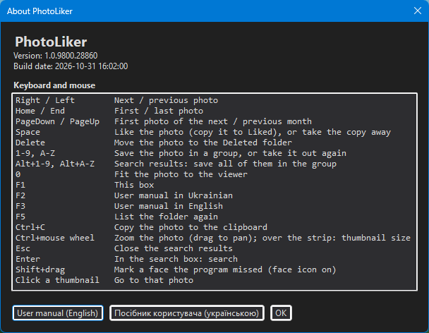